Let Us Try to Understand What Different Entities Say
Dogs
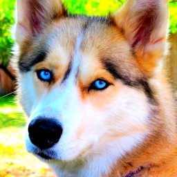
"Hounds follow those who feed them" - Otto von Bismarck
Read More at Wikipedia
Cats
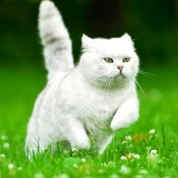
"Time spent with cats is never wasted" - Sigmund Freud
Read More at Wikipedia
Cows
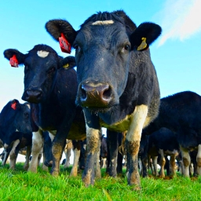
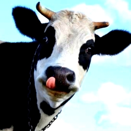
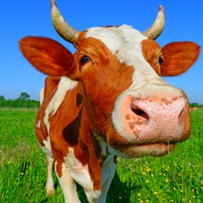
"My cow is not pretty, but it is pretty to me" - David Lynch
Read More at Wikipedia
Dolphins
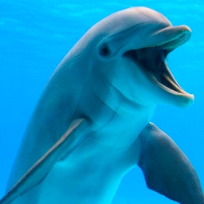
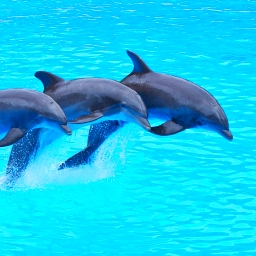
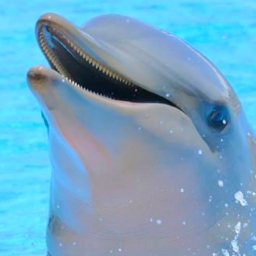
"To get rid of depression, I swim with dolphins" - Patti Stanger
Read More at Wikipedia
Humans
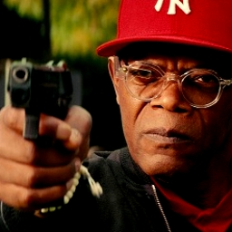
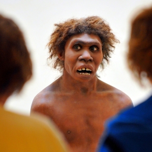
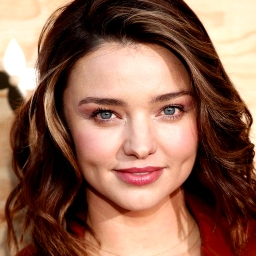
"Exploration is really the essence of the human spirit" - Frank Borman
Read More at Wikipedia
Disclaimer
The information contained in this website is for general information purposes only. All images and videos are property of their respective owners.